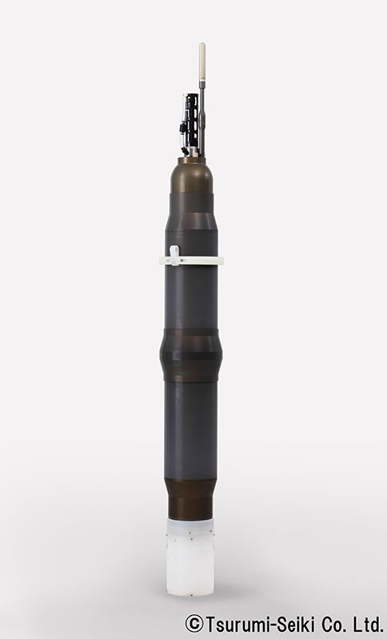
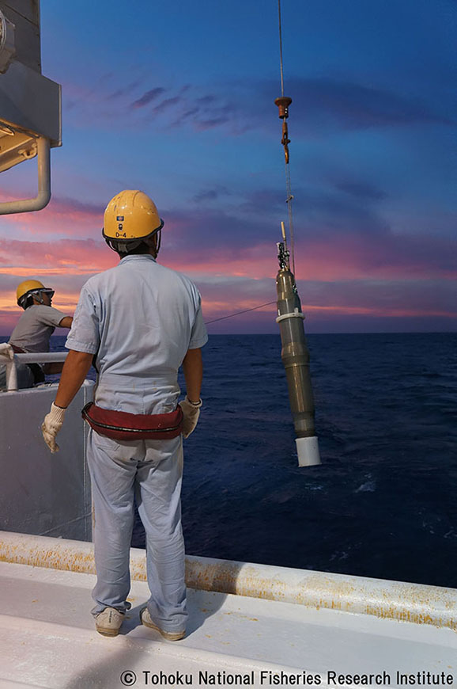
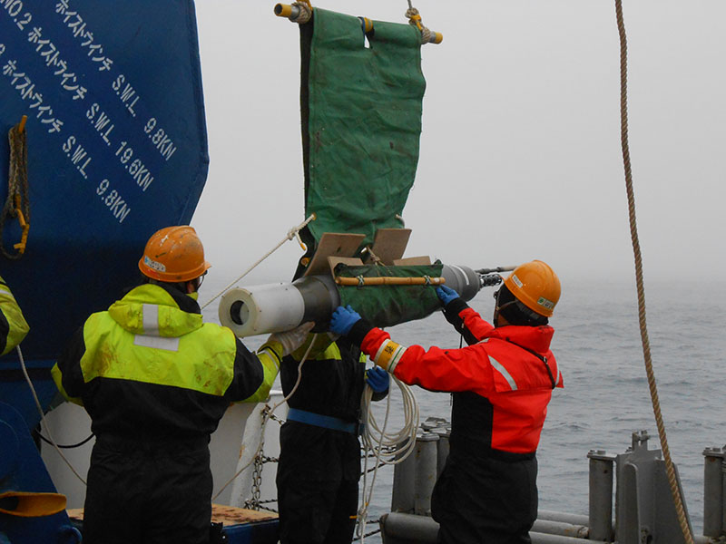

Project Abstract
Importance of deep ocean observations by deep floats and Deep NINJA
The importance of deep ocean observation has been gradually recognized to understand oceanic effects on the anthropogenic climate change accurately. A deep float is one of the most suitable devices to observe deep ocean at reasonable cost, and a monitoring network with many deep floats, "deep Argo", is strongly required to be built up even from social viewpoints. However, there are no floats available below 2,000 m depth and a deep float is now being developed internationally.
In Japan, Japan Agency for Marine-Earth Science and Technology (JAMSTEC) and Tsurumi-Seiki Co. Ltd. (TSK) began to develop a deep float in 2010, and finally we succeeded to realize a deep float, "Deep NINJA" in April 2013 (Figure 1). Deep NINJA can observe the deep ocean up to 4,000 m depth globally except for the throughout-a-year ice covered seas. Figure 2 shows the schematic view of Deep NINJA operation in the ocean in comparison with the normal (Argo) float.
Deep ocean observations by Deep NINJA floats operated by JAMSTEC
Until now, JAMSTEC has deployed totally 14 floats of Deep NINJA (including 2 prototypes) mainly into the Southern Ocean in corporation with TSK. The floats have operated well and have observed more than 180 oceanic profiles (including about 150 deep profiles, as of the end of May 2014). Especially, one Deep NINJA float (S/N 6) deployed off the Adelie Coast, the Antarctica, succeeded to measure the deep profiles under sea ice throughout an Antarctic winter and has observed seasonal changes of the deep/bottom waters in the Antarctic Ocean for more than one year.In the web-site, we are going to introduce the inventory of the Deep NINJA observations, e.g., date and location of float deployment, and observation parameters such as observation cycle and profile depth. Also, there are several figures on the observation results, e.g., trajectories of float movements, and temporal changes of temperature and salinity profiles measured by floats.
Release of scientifically quality-controlled data of Deep NINJA observations
As Deep NINJA observations are carried out under Japan Argo, all data of their observations ought to be available for the public via Global Data Archive Centers (GDACs) in the manner of Argo, and JAMSTEC is making an effort for the publication. However, some problems (see below) are left on the quality of deep float observations. Argo Steering Team is concerned very much that such "less reliable" data are released together with the normal Argo float data, and now they are discussing how to release the deep float data. Probably, raw data (only) will be opened at GDACs.Thus, JAMSTEC will provide delayed-mode data of Deep NINJA, which are quality-controlled scientifically, for anyone who wants to use them for scientific purpose. If so, please contact with the following e-mail address. Note that the data will be changed without announcements and that JAMSTEC takes no responsibility for any problem/trouble that occurred for the use in case.
The problems clarified on the data quality of deep float measurements are as follows:
1. The CTD sensor on the current deep floats (including Deep NINJA) was developed originally for "Argo floats," which work in the shallower ocean than the 2,000m depth. The details of its features under high pressure in the deep ocean were not examined enough.
2. Temperature and salinity measurements of the CTD sensor seem to have a bias which depends on pressure. JAMSTEC has clarified that its salinity measurements tend to be fresher at higher pressure.
3. International Argo has no agreement on the criteria for data quality for measurements at deeper than 2,000 dbar depth. Thus, there are no standard for quality control for deep observations.
Schematic comparison between present Argo float and Deep NINJA observations.(Figure1)

Deep NINJA (photo credit: Tsurumi-Seiki Co. Ltd.)

- Specifications of Deep NINJA
- Maximum depth for operation:4,000dbar(～4,000M)
- Size:210cm and 50kg
- Sensor:SBE41CP for deep float (Sea-Bird Electronics, US)
- Transmission:Iridium, Short Burst Data Service (two-way)
- Positioning:by Global Positioning System
- Lifetime:More than one year by Lithium batteries
Deployment of the first Deep NINJA from R/V Wakataka-maru in August 2012.(photo credit: Tohoku National Fisheries Research Institute, Japan)
Deployment of Deep NINJA off the Adelie Coast, Antarctica from R/V Mirai in December 2012.
©Japan Agency for Marine-Earth Science and Technology (JAMSTEC) 2014


{kind=link}
{kind=link}
{kind=link}
{kind=link}
{kind=link}
{kind=link}
{kind=link}
{kind=link}